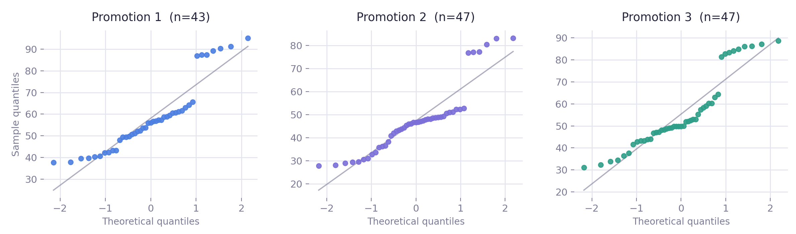
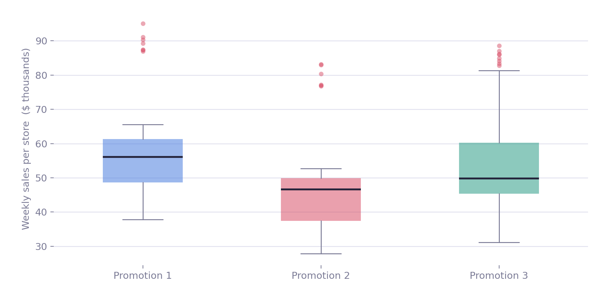
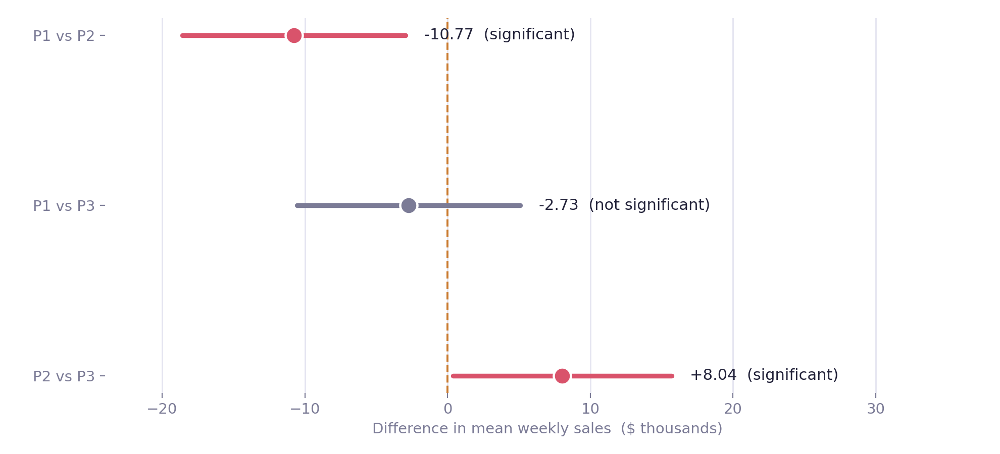
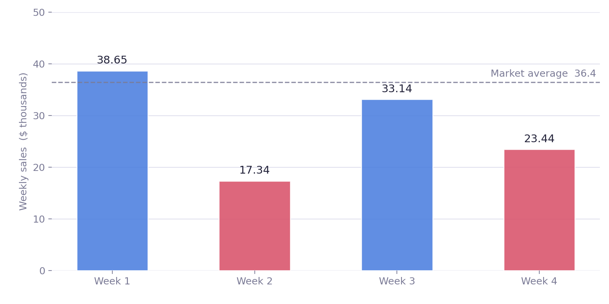
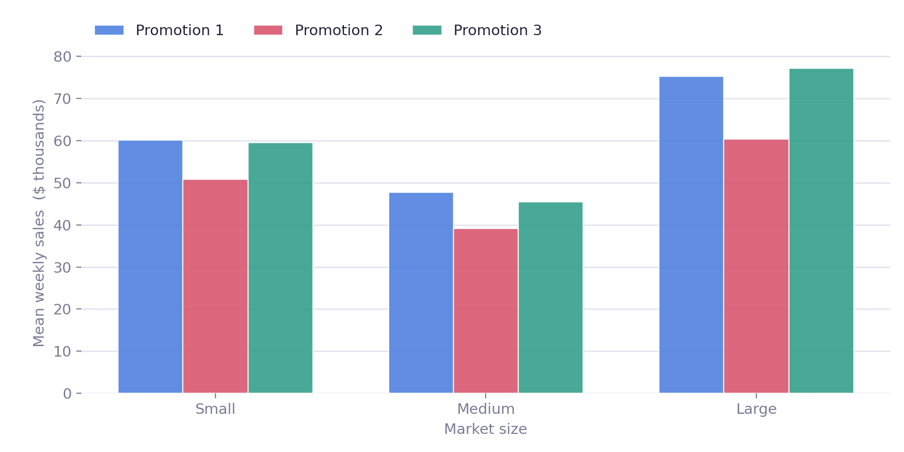

01
Design
What was asked, and what the analysis tried to disprove
The chain wanted to roll out one of three promotions nationally but had no basis for choosing. Each of 137 locations was assigned a single promotion and weekly sales were recorded for four weeks. Because assignment happened at the store level and was randomized, this is experimental data — not an observational dataset dressed up as one.
Null hypothesis H₀
Mean sales are equal across the three promotions.
μ₁ = μ₂ = μ₃
Alternative H₁
At least one promotion differs in mean sales.
Alpha
0.05
Main test
One-way ANOVA
Post hoc
Tukey HSD
The predictor is categorical with three levels; the outcome is continuous; the comparison is between group means. ANOVA fits. Its F test is non-directional, so it can say that the groups differ but never which one wins — that question belongs to the post hoc stage.
02
Data hygiene
Doubt the data before doubting the null
A clean p-value on broken assignment is worthless, so the first pass looked for duplicated rows, stores appearing twice in the same week, stores that drifted between promotions, and missing weeks.
| Check | Result | Verdict |
|---|---|---|
| Exact duplicate rows | 0 | clean |
| Duplicate store × week | 0 | clean |
| Stores with mixed promotions | 0 | clean |
| Weeks observed per store | 4 for all 137 | complete |
| Sample ratio mismatch (χ² GOF) | p = 0.890 | balanced |
| IQR outliers | 46 rows | flagged |
Sample ratio mismatch asks whether the split landed where the design intended. Since assignment happened per store, the test ran on 137 stores rather than 548 rows — a 43 / 47 / 47 split is well within what random assignment produces.
548 rows in, 548 rows out. Nothing was dropped, because nothing was broken. The 46 flagged outliers are handled in section 7 rather than quietly deleted here.
03
Unit of analysis
Feed it 548 rows and the p-value will lie to you
ANOVA assumes independent observations. This dataset stores each location as four weekly rows, and a store's week 1 and week 2 are not independent — they resemble each other. Passing all 548 rows in treats 137 independent units as 548, inflating the sample and shrinking the p-value below what the design earns.
Promotions were assigned per store, so the analysis unit was moved to the store: each location collapses to its four-week mean, giving 137 independent observations. That discards information, so the decision needed evidence.
Week carries no signal
F = 0.028 · p = 0.9935
Week 1 and week 4 are indistinguishable. Averaging destroys no trend because there is no trend.
Variance lives between stores
Between 16.19 · Within 4.73
Store-to-store spread is roughly 3.4× the week-to-week spread. Weekly wobble is noise, not signal.
The alternative wasn't worth it
Repeated measures / mixed model
A mixed model would preserve weekly structure — but the structure it preserves is noise, so the added complexity buys nothing.
04
Assumptions
Normality failed; equal variance held

Shapiro-Wilk normality rejected
P1 p = .0002 · P2 p < .0001 · P3 p = .0001
Rejected in every group. The cause is a handful of high-revenue stores in one market, not a fundamentally different distribution.
Levene equal variance met
stat = 0.468 · p = 0.6272
Group variances are statistically indistinguishable.
Pushing ahead with ANOVA alone would have been hard to defend. Switching entirely to a rank-based test would have cost the ability to state how large the difference in dollars is. With balanced groups (43 · 47 · 47) and equal variances, the compromise was to run ANOVA and Kruskal-Wallis side by side and require them to agree.
05
Main test
There is a difference — but it isn't the whole story

ANOVA F
5.846
p-value
0.0037
Effect size η²
0.080
Kruskal-Wallis
p = 0.0002
The parametric and non-parametric tests reached the same conclusion, so the normality violation is not driving the result.
η² = 0.080 means promotion explains roughly 8% of the variance in store sales. The other 92% belongs to something else — market size, mostly. Significant and important are different claims, and here the promotion is significant without being dominant. Saying so up front is more useful to the business than overselling the finding.
06
Post hoc
Which pair, and by how much

The ordering is Promotion 1 ≈ Promotion 3 > Promotion 2. One and three cannot be separated; two loses to both. The experiment answered what to drop, not what to pick.
07
Robustness
Telling a bad reading apart from a real one
The IQR rule flagged 46 rows, and 45 of them came from a single large market. Those stores sell more because the market is bigger — the values are correct, and deleting them would delete the signal rather than clean it.

A transcription error would usually leave a digit-shift trace, and none appears. There is also no column recording closures or stockouts, so no cause can be confirmed. With no grounds to delete it, the value stayed — and instead the analysis checked whether it mattered.
Original
F = 5.846 · p = 0.0037
Store 507, week 2 removed
F = 5.778 · p = 0.0039
The conclusion does not rest on a single observation, so all 548 rows were kept.
08
Confounders
Was Promotion 2 simply dealt a worse hand?
Before accepting that Promotion 2 underperforms, it has to be ruled out that it was disproportionately assigned to small markets or older stores. If so, the finding would be an artifact of assignment rather than an effect of the promotion.
Promotion × market size independent
χ² = 1.189 · p = 0.880
No promotion clustered into larger or smaller markets.
Promotion × store age no difference
F = 0.450 · p = 0.639
Store tenure is balanced across the three groups.
Two-way ANOVA controlling for market size
Promotion
F = 16.04
Market size
F = 96.13
Interaction
p = 0.266
This is where it gets interesting. Adding market size pushed the promotion F statistic up from 5.85 to 16.04. A confounder would have weakened the effect once controlled; instead it sharpened. Market size is a powerful driver of sales but is unrelated to how promotions were assigned, so it was acting as noise — and removing that noise exposed the promotion effect more clearly. The interaction term is not significant (p = .266), so the size of the promotion effect does not depend on how large the market is.
09
Segments
Does it hold everywhere — and what does repeating the test cost?

Running ANOVA separately within each market size means running three tests, and repeated testing inflates the chance of a false positive: at α = .05, three independent tests produce at least one significant result about 14% of the time even when nothing is there. Bonferroni correction was applied before reading anything into the results.
| Segment | n | Raw p | Bonferroni | Verdict |
|---|---|---|---|---|
| Small | 15 | 0.0032 | 0.0096 | significant |
| Medium | 80 | 0.0001 | 0.0003 | significant |
| Large | 42 | 0.0077 | 0.0232 | significant |
All three survive correction, and Benjamini-Hochberg gives the same answer. Promotion 2's weakness is a consistent pattern rather than one lucky segment. The caveat: the small-market group holds only 15 stores, roughly five per arm, so that row deserves less weight than the other two.
10
Business impact
Converting a p-value into dollars
vs Promotion 1
$2,024,700
47 stores × 4 weeks, estimated
$10,770 per store-week (−18.5%)
vs Promotion 3
$1,510,600
47 stores × 4 weeks, estimated
$8,035 per store-week (−14.5%)
How to read these numbers
The per-store, per-week gap is about $10,770. That looks modest until it compounds across 47 stores and four weeks into roughly two million dollars. Stated the other way: $2M is not what one restaurant lost. Without naming the scale, the figure reads as inflation.
It is also a point estimate. Propagating the Tukey 95% interval ($2,944 to $18,595 per store-week) puts the total somewhere between $0.55M and $3.5M. Two million is the most plausible value inside that range, not a settled amount. And because the outcome variable is revenue, the cost of actually running each promotion is not in these figures.
11
Recommendation
What the data settled, and what it left open
Drop Do not roll out Promotion 2
It clears every check: statistical significance (p = .004), a medium effect size (η² = .080, d = 0.71), no confounding, consistency across all three market segments, and stability when the one questionable observation is removed. The recommendation does not hang on any single test.
Tied Revenue cannot separate Promotions 1 and 3
Tukey found no significant gap (p = .686), and splitting by market size flipped the direction rather than clarifying it (Small −0.65 · Medium −2.20 · Large +1.97, in $ thousands). On revenue alone the two are equivalent options.
The choice therefore has to be made outside this dataset — on execution cost, operational complexity, and inventory or logistics load. Naming what is still missing is more honest than forcing a winner out of a tie, and it tells the business exactly what to go measure next.
12
Limitations
What this analysis cannot answer
A four-week window
Nothing here distinguishes a durable effect from a novelty effect. That requires sales beyond week four.
Information lost to aggregation
Collapsing to store-level means bought independence at the cost of any week-to-week pattern.
No cost data
The comparison is on revenue. If the promotions differ in cost to run, the margin ranking could differ from this one.
A thin segment
Small markets contribute about five stores per arm. The result survived correction but warrants re-testing with more data.
What to collect next
Execution cost per promotion (labor, marketing spend, inventory load) · sales beyond week four · additional small-market locations